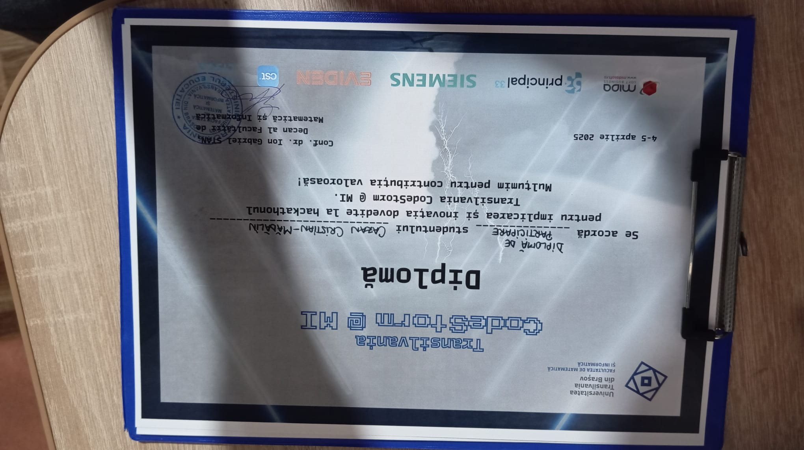
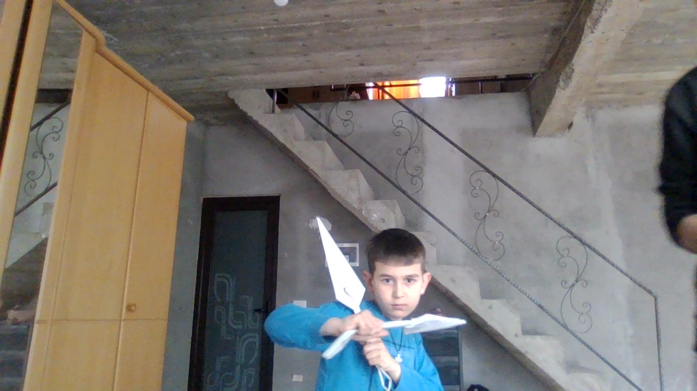
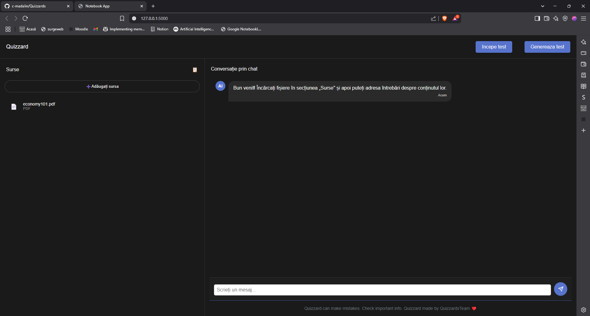

Mădălin Cazan
Software Developer Intern @ NTT DATA
Applied Informatics student at Transilvania University of Brașov, building enterprise backends and Angular frontends. I approach every system with a persistent "Why?" — driven by deep curiosity and a passion for clean architecture.

About Me
Hello! I'm Mădălin Cazan
I study Applied Informatics at the Faculty of Mathematics and Computer Science in Brașov. I have a logical mindset and a persistent habit of asking "Why?" — a question that keeps me curious and drives me to understand how things work at a deeper level. Currently building professional experience in backend and frontend development, with a focus on clean architecture and real-world enterprise applications.
Outside of tech, I enjoy hiking, skiing, volleyball, cooking, and exploring ideas in psychology and philosophy.
Technical Skills
Hobbies & Interests
- Outdoor activities — hiking, skiing, volleyball
- Cooking and sharing meals with friends
- Psychology and understanding human behavior
- Philosophy and exploring ideas that challenge my thinking
Experience & Education
Work Experience
Software Developer Intern
NTT DATA
Project 1 (Nov 2025 – Feb 2026): Internal enterprise web API using C#,
ASP.NET Core, and Angular 20 — REST APIs, DDD, event-driven patterns,
RabbitMQ, Docker, MailHog, daily stand-ups and code reviews.
Project 2 (Feb 2026 – Present): Enterprise ASP.NET Core + Angular —
class design, feature structuring, and end-to-end module development.
C# & Angular Developer
Trimble Workshop
Two-module intermediate program — C# fundamentals, OOP and design patterns in Module 1; component-driven frontend development and reactive patterns in Angular in Module 2.
Angular Developer
Pontic Studio
Developed features for a game trading platform using Angular. Focused on UX quality, component scalability, and Agile collaboration with backend and UI design teams.
Apprenticeship
Mitel Romania Networks
Exposure to R&D engineering workflows, backend microservices, and telecommunications concepts including antenna systems and signal propagation.
Education
B.Sc. Applied Informatics
Transilvania University of Brașov
Faculty of Mathematics and Computer Science. 2nd year completed. Studying data structures, algorithms, and mathematical fundamentals. Expected graduation: 2025.
Innovation Labs Hackathon
Elektrobit
Participated in the Innovation Labs Hackathon organized by Elektrobit.
Data Marketing Certification
Data Revolt
Track, Visualize, Analyze — introduction to Google Tag Manager and data marketing fundamentals.
Android Development
CST Academy
Android app development with Java and Kotlin using Android Studio.
Sales Bootcamp
AIESEC
Sales strategies, communication techniques, and negotiation skills.
My Projects

CargoLink — Bachelor's Thesis
Full-stack logistics platform with a custom routing engine loading the Romanian OSM road graph (~105k edges) in-memory. Implements Dijkstra, A*, and Bidirectional A*. Geospatial matching via PostGIS ST_DWithin on route LineStrings. Clean Architecture + DDD + CQRS with 6 domain aggregates and state machines.

LAN Server Chat
Multi-client chat application using C++ and Winsock2. Server hosted on Android via Termux, broadcasting messages to all connected clients.
Get In Touch
Open to new opportunities and collaborations.
cazanmadalin12@gmail.com
+40 726 998 966
Brașov, Romania